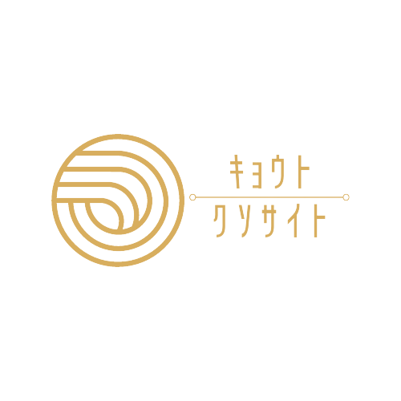

Scroll
初めにご覧になれ。
京都くそサイトとは、
我々の京都旅行に関する情報を素晴らしい語彙力と計画力でまとめあげた渾身の一作です。
全米も驚きを隠せないほどの得も言われぬ発想で、我々が向かう食事処や体験予定のものをポンポポンと詰め込みました。
面白センス満点のこのサイトをぜひ一度、ご覧ください。
（偉大なる情報は旅行が開始されるまで随時更新されます。情報更新のお知らせは口頭にて行われます。 SNS等のお知らせは関係者にのみ行うサービスの悪さを誇ります。 ご了承ください。）